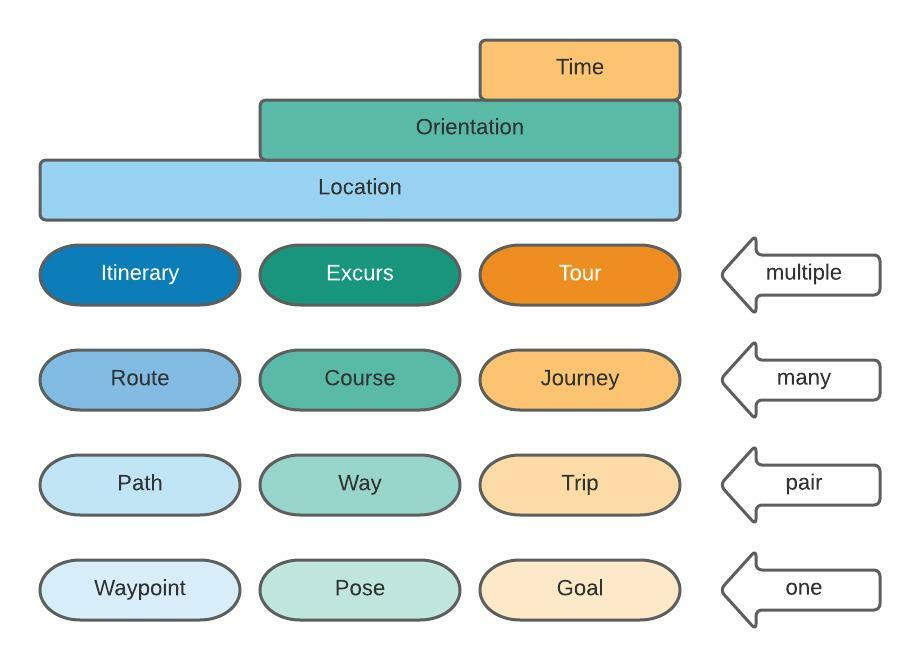

Topological Metaphysic Object Index¶
An topological index of all metaphysic objects used by diego instruction programming language.
Missions¶
| mission | notes
examplesexample | API |
| ——— | —– | —– |
| mission |
Naming & Labeling¶
| name/label | notes<brexamples | API |
| ——— | —– | —– |
| sobriquet one each thingy can have one sobriquet with verb _sobri()
| label any thingy can have any number of labels
| moniker unique one moniker to one thingy
| cognomen
| clepe
Puffs¶
| puffs | notes<brexamples | API |
| ——— | —– | —– |
| channel | | An exclusive sub-section of a workspace, sometimes referred to as a conversation |
| cloud | A zone (puff) used for diego communication that utilises a cloud based platform like twitter, discord, slack, etc. |
| fog | A zone (puff) used for diego communication that relies on UDP | |
| mist | A zone (puff) used for diego communication that relies on TCP | |
| workspace | An exclusive section of a puff, sometimes called a room |
Data Management¶
| data management | notes
examples | API |
|–|:–|–|
| attr, attribute | Each attr is a immutable name-value pair ({monniker|uuid} as the name, _value({value}) as the value). All data held in an attr should be immutable and have a one-to-one relationship (one name for one value).
Example: add_attr(last_name)_value(Jones);
See also: spec | attr |
| blob | Binary Large OBject |
| var, variable | | var |
| dict, dictionary | | |
| metric | | metric |
| scalar
| array
|
Data Communication Management¶
| time management | notes
examples | API |
|–|:–|–|
| funnel | | |
| lennuf | | |
https://arxiv.org/pdf/1906.10641.pdf mavlink https://docs.wpilib.org/en/stable/docs/romi-robot/index.html https://www.bigocheatsheet.com/
Routing¶
|  | | :—: | | Route Matrix |
Location Routing¶
| location routing | notes
examples | physic version | API |
|–|:–|:-:|–|
| itineritinerary | | | itiner |
| route | | wayfind | route |
| path | | | path |
| waypointwp | | landmark | waypoint |
Roundsup¶
| roundsup | notes
examples | physic version | API |
|–|:–|:-:|–|
| (route) | | wayfind | (route) |
| geofence | | border | geofence |
| lane | | track | lane |
| spine | | rail | spine |
Movement & Formation¶
| movement | notes
examples | API |
|–|:–|–|
| form, formation | | form |
| gait | The thing version of stride | gait |
| ghost | | ghost |
| stride | The human version of gait | stride |
| stance | | stance |
| swarm | | swarm |
Identification¶
| identification | notes
examples | API |
|–|:–|–|
| ident | | ident |
| manufacturmanufactmanufacturer | | manufactur |
| make | | make |
| model | | model |
| serialnumserialnumbersnum | | serialnum |
| id()_moniker | | moniker |
| id()_name | | name |
| id()_nickname | | nickname |
| id()_species | | species |
| id()_version | | version |
| id()_softrelid()_softwarerelease | | softrel |